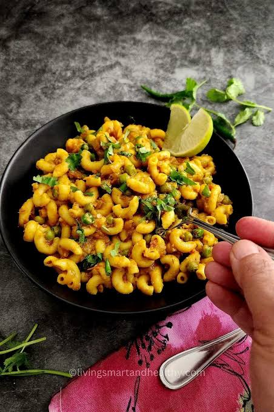

Simple macaroni is a quick, classic comfort food made with small, elbow-shaped pasta boiled until tender.Tossed with melted butter, salt, black pepper, and optional grated cheese or a light sauce, it yields a soft, satisfying texture with a neutral, savory flavor. Because it requires minimal ingredients and cooks in under 15 minutes, it serves as a reliable solo meal, quick side dish, or base for added vegetables and proteins.